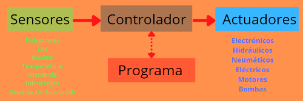
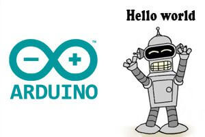

Iniciación a Arduino
Qué es Arduino

Arduino es una plataforma de Hardware y Software libre, con una placa electrónica (hay varios modelos) que integra básicamente un microcontrolador, una memoria y una unidad de Entradas (Sensores) y Salidas (Actuadores: motores, luces,...). Además, dispone de un conjunto de pines que permiten la conexión de dispositivos de entrada y de salida.
Esta placa se puede programar mediante diferentes entornos de programación. El más conocido es el llamado Arduino IDE (Integrated Development Environment). De esta forma podrás crear tus propios proyectos tecnológicos, dotarlos de sensores que detecten magnitudes físicas como luz, calor, fuerza, etc… y en base a esa información, escribiendo un programa, activar otros dispositivos (actuadores) como pequeñas bombillas, leds, servomotores, pequeños motores DC, relés, etc.
¿Qué se puede hacer con Arduino?
Realmente el límite lo marca tu imaginación pero por dar alguna pista, podrías diseñar un sistema para la apertura y cierre de la puerta de un garaje, hacer un robot móvil que detecte objetos o que siga una línea negra, crear un detector de luz y oscuridad, implementar un termómetro, controlar un cilindro neumático, etc.
Aunque su uso más común es en pequeños proyectos para el aula, Arduino es una herramienta que también se utiliza en el ámbito profesional para monitorización de sensores y automatización a pequeña escala por su flexibilidad, fiabilidad y precio.
La placa
¿Qué es un microcontrolador?
Es un circuito integrado que se puede programar, o sea que puede ejecutar las órdenes que tenga almacenadas en su memoria. Tiene las tres funciones principales de un ordenador, pero en un único chip:
Una unidad central de proceso
Memoria
Entradas y salidas
El microcontrolador en la placa Arduino se programa mediante el lenguaje de programación Arduino (basado en Wiring) y el entorno de desarrollo Arduino (basado en Processing) y normalmente mediante el Arduino IDE.
Entradas y salidas
Mediante los conectores de Arduino correspondientes a las entradas y salidas podemos comunicar nuestros programas con el “mundo exterior”. Si queremos leer el valor de la magnitud física medida por un sensor, por ejemplo una LDR que detecta el nivel de luminosidad, lo tendremos que hacer conectando el sensor a uno de los pines de entrada (en este caso analógicas) de la tarjeta. De esta forma con una simple instrucción de lectura en el programa, podremos obtener el valor de la magnitud física.
Si nuestra intención es actuar o “hacer algo” una vez leído el valor del sensor, por ejemplo encender un led si el sensor de luminosidad detecta oscuridad, tendremos que conectar el actuador (en este caso el led) a un pin de salida que proporcionará la corriente necesaria para activarlo.
En Arduino las entradas pueden ser analógicas o digitales y las salidas sólo digitales. Cada pin digital tiene doble función entrada o salida. En la zona de configuración del programa hay que indicar explícitamente mediante una instrucción qué función desempeña un determinado pin.
La placa Arduino UNO consta de:
14 conexiones digitales configurables como Entradas o Salidas que operan a 0 ó 5 Voltios. Cada pin puede proporcionar o recibir como máximo 40 mA. Los pines 3, 5, 6, 8, 10 y 11 pueden proporcionar una salida PWM (Pulse Width Modulation). Si se conecta cualquier dispositivo a los pines 0 y 1, eso interferirá con la comunicación USB.
6 entradas analógicas con una resolución de 10 bits que proporcionan un número entero de 0 a 1023. Por defecto miden de 0 voltios (masa) hasta 5 voltios.
Las entradas digitales son útiles cuando las señales a leer son valores discretos. Por ejemplo queremos poner un pulsador o un interruptor que encienda un led. Hacemos un montaje que cuando se pulse, entren 5 voltios en el pin digital de entrada y cuando no se pulse “entren” 0 voltios. De esta manera la lectura del pin digital de entrada será “HIGH” con 5 voltios o “LOW” con 0 voltios.

Shields para Arduino
Las llamadas Shields (escudos) para Arduino son tarjetas que añaden funciones a la placa Arduino.
Actualmente hay decenas en el mercado. Puedes encontrar una larga lista de ellas en http://playground.arduino.cc/Main/SimilarBoards#goShie
Placa de prototipado o Protoboard
Para poder realizar conexiones en circuitos sin necesidad de soldar o empalmar
Cable USB de conexión entre la placa Arduino y ordenador.
Sirve tanto para enviar órdenes en forma de programas a la placa, como para darle energía para su funcionamiento. Es el mismo tipo de cable USB usado para las impresoras o para cargar móviles (mini USB).
Conectando
Uno de los aspectos claves para el buen funcionamiento de proyectos con Arduino que incluyan elementos que consuman una intensidad superior a 200 mA como motores, relés, electroválvulas, etc... es la alimentación eléctrica de la placa. Simplificando, existen varias posibilidades para alimentar Arduino:
1.- Mediante el cable USB conectado al ordenador:
Cada pin proporciona 40 mA.
El límite proporcionado por el USB es de 500 mA en total.
2.- Utilizando una fuente de alimentación externa conectada al jack de Arduino (fuente de voltaje, adaptador de corriente, batería o portapilas) :
El voltaje recomendado de la fuente externa está entre 6 y 12 V.
La intensidad máxima que puede entregar Arduino a los actuadores que queramos controlar (servos, motores, relés,...) es de 1A, aunque una exposición prolongada a esta corriente puede estropear la placa. Lo recomendable son 800 mA.
El pin serigrafiado con Vin proporciona directamente el voltaje de la fuente conectada al jack de Arduino (menos la caída de tensión del diodo de protección), desde ese pin podemos sacar un cable y alimentar a los actuadores que necesitemos. Por ejemplo, si alimentamos con una pila externa de 9 V conectada al jack, en el pin Vin tendremos aproximadamente 9 V (hay que restar la caída de tensión del diodo de protección). Además en los pines 5V y 3.3V dispondremos también de dichos voltajes aunque la fuente externa sea de 9V.
3.- Conectando el positivo (+Vcc) de la fuente externa a Vin y el negativo a GND:
Podemos alimentar Arduino externamente sin necesidad de conector Jack a través de Vin y GND, el problema es que nos saltamos un diodo de protección que evita que se queme el circuito por un exceso de corriente.
CONCLUSIONES:
Si necesitamos hacer funcionar actuadores de bajo consumo (luces, zumbadores, etc...) podremos trabajar directamente con el USB conectado al ordenador.
Si necesitamos mover cargas, excitar bobinas u otros elementos de mayor consumo lo recomendable es alimentar externamente Arduino desde el Jack con un rango de 9 a 12 V
Cuando se usan otros elementos de gran consumo, se puede usar Arduino sólo para el control y alimentarlos externamente. En estos casos no olvidar conectar entre sí las GND de las distintas alimentaciones.
Hola Mundo
En robótica llamamos programa a una serie de instrucciones que se guardan en el microcontrolador. Mediante éstas se lee la información que llega de los sensores y se decide qué hacer con los actuadores. Las instrucciones están escritas usando un determinado lenguaje informático de programación

Instalar Arduino en Windows es realmente sencillo. Solo tenéis que:
Descargar la última versión de la página de descargas (enlace).
Descomprimir el archivo, doble click en instalar. Y seguir las instrucciones
La instalación del IDE de Arduino en Linux es incluso más sencilla. Solo tenéis que abrir una consola de comandos y escribir:
sudo apt-get install arduino.
Vamos a hacer nuestro primer programa en Arduino. Asumimos que tenemos una placa Arduino UNO o similar y el IDE estándar de Arduino correctamente instalado.
En primer lugar, conectamos nuestra placa Arduino mediante el cable USB.
A continuación abrimos el entorno IDE de Arduino.
Seleccionamos el modelo de placa que estemos empleando.
Seleccionamos el puerto de comunicación al que está conectado.
En Windows será algo tipo COM1, COM3...
En Linux será del estilo /dev/ttyACM0
Ya tenemos la conexión configurada y lista para realizar la carga de nuestro primer programa.

En el IDE de Arduino estándar los programas tienen siempre la siguiente estructura
//Zona DECLARACIONES
void setup() {
// Zona funcion SETUP
}
void loop() {
// Zona funcion LOOP
}
Donde cada parte tiene la siguiente función:
Zona declaraciones: En esta parte se declaran variables, funciones, objetos, y estructuras.
Funcion setup: Esta función se ejecuta cada vez que se enciende la placa de Arduino, o se pulsa la tecla Reset. Realiza funciones de inicialización de periféricos, comunicaciones, variables, etc.
Funcion loop: Esta función se ejecuta contínuamente. Realiza el grueso de tareas del autómata.
Para probar el funcionamiento de nuestro montaje vamos a emplear uno de los ejemplos incluidos en el IDE de Arduino.
Seleccionamos el ejemplo Basics/Blink, y aparecerá un código similar al siguiente.
// the setup function runs once when you press reset or power the board
void setup() {
// initialize digital pin LED_BUILTIN as an output.
pinMode(LED_BUILTIN, OUTPUT);
}
// the loop function runs over and over again forever
void loop() {
digitalWrite(LED_BUILTIN, HIGH); // turn the LED on (HIGH is the voltage level)
delay(1000); // wait for a second
digitalWrite(LED_BUILTIN, LOW); // turn the LED off by making the voltage LOW
delay(1000); // wait for a second
}
Este ejemplo enciende y apaga un LED cada segundo. La función de cada linea está comentada a la derecha, pero por ahora no nos vamos a preocupar del significado, ya veremos estos aspectos más adelante. El LED empleado está integrado en muchas de las placas de Arduino (UNO, MEGA, etc) conectado físicamente al PIN 13.
Se puede aprender mucho leyendo los ejemplos, es muy recomendable echar un vistazo a todos.
Finalmente, pulsamos en el botón remarcado para compilar y enviar la programación a nuestra placa Arduino. Tras unos segundos, el IDE compilará el programa y la pantalla debería ser similar a la siguiente.
Tras unos parpadeos, la placa empezará a ejecutar el programa, encendiendo y apagando el LED. Estamos de acuerdo en que no es muy espectacular, pero lo importante es que si habéis llegado hasta aquí significa que todo funciona y está bien configurado, y a partir de aquí estáis listos para empezar a jugar.
Alimentación externa
Una vez hemos programado nuestra placa es momento de quitar el cable USB y realizar una alimentación externa. Arduino UNO y MEGA pueden ser alimentados mediante dos medios. El origen de la alimentación se selecciona automáticamente.
Alimentación regulada a 5V mediante el puerto USB. Podemos conectar un transformador, una batería exterior de 5V, o cualquier otra fuente 5V mediante un conector USB. Esta entrada debe estar regulada en alimentación, es decir, debe ser estable, constante y fija a 5V, ya que Arduino no realiza la supervisión del voltaje introducido a través de esta entrada.
Alimentación mediante el conector Vin, con un voltaje de entre 6 a 20 voltios, aunque lo ideal es entre 7 a 12 voltios. Por ejemplo, podemos conectar un transformador, una o varias batería, una pila de 9V, o una agrupación de 4 o 6 pilas de 1.5V, para alimentar nuestros proyectos.
Evitar voltajes superiores a 12 voltios durante un tiempo prolongado pues podría sobrecalentar los reguladores de voltaje y dañar la placa.
Si conectamos nuestra alimentación externa a nuestra placa Arduino veremos que se ejecuta la programación que hemos realizado, por supuesto sin la necesidad de un ordenador conectado.
 Otras plataformas donde puedes crear programas de Arduino de forma visual mediante bloques son:
Otras plataformas donde puedes crear programas de Arduino de forma visual mediante bloques son: